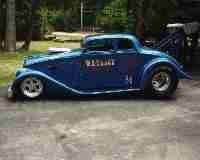

|
As usual, click on the picture for a larger version. |
|
| 37 Chevy Coupe ~ Man-O-War
327/350Hp Corvette engine, 4-speed, Hurst, 4.11:1 Olds rear end. Headers & Traction bars by Brugy of Fairfield, Iowa. Ran C/Gas at 1/8th mile strip at Kokuka, IA 1965-1966. Paint by Dave Paul, 57 Cadillac Bahama Blue "My first car was a 56 Chevy in High School. I traded it even up for the 37. My Dad thought I was nuts so he made me trade back. It took me 2 years to get the 37 back, and I had to hide it from my dad until it was done! Raced the car while I was in college in Fairfield, Iowa." |
|
| 33 Willys A/Gas ~ Man-O-War II
B&N Fiberglass body. Frame by Cotton Worksman. Paint by Jimmy Slobdnick. Interior by John Benovidous. 396 & 468 Big Block Chevys. Hilborn Injection. 4.56:1 Olds rear. Torqueflite by Fairbanks. Sponsor: Mike Yank, Speed Performance Engineering, Palantine, IL. "I built this car in the early 70's and took it to car shows in Chicago, but I sold it when we found out there was no money to be made running A/Gas. I then started building Street Rods." |
|
| 32 Ford ~ Hemi Powered
VWT Glass Body. Paint by Tom O'Brian. 392 Hemi built by WS Tracy. Torqueflite Transmission. Corvette rear end. Interior by Dave Sereck. Cragar "Super Trick" wheels. MT Tires. Moon Valve covers. "After the 33, I decided to build a Street Rod. I did race this at Union Grove, WI" |
|
| 48 Austin A/Gas ~ Mr. Mean
D40 Two door. Steel body, glass frontend. 392 Hemi, 413 cu. in. built by WS Tracy. Torqueflite Transmission. Halibrand Wheels. Headers by LeClair Race Cars. Cam by Chris Nelson. Edlebrock Carbs. 4.56:1 Olds rear with spool by Tom Bauknecht. "This car started as a Street Rod and was featured in Hot Rod Magazine as such. I put the headers on and took it to the GoodGuys meet at Indy in 1994 and I was hooked again! The car was sold to Mike Coughlin of Jeg's and they gave it to their dad, Jeg Coughlin, Sr." |
|
|  | 33 Willys A/Gas ~ Mr. Mean II
Body & Frame by Chuck Finders. Paint by John Vogel. 392 Hemi by WS Tracy. Torqueflite Transmission. Ford 9" rear with 4.88:1 gears by Tom Bauknecht. Edlebrock carbs. Vertex Magneto. Moon Valve Covers. Ross 13 1/2 pistons. Wildwood Brakes. Cragar wheels. Goodyear tires. Special thanks to Ed Willie, Bob Hagerman, Mike Judkins, Don Hanson, Hutch & Kaye Tracy for all your help. "After selling the Austin to Coughlin, my wife and I bought the Willys from a fellow in Ohio. The car was a roller so I built the 392 and installed it with the help of LeClair Race Cars. The Willys has been sold to Gordon Veal of Selein, MI." |
 |
"This is a picture of my hero and me at Indy in 1994 where I ran the Austin." |
{kind=link}
{kind=link}
{kind=link}
{kind=link}
{kind=link}